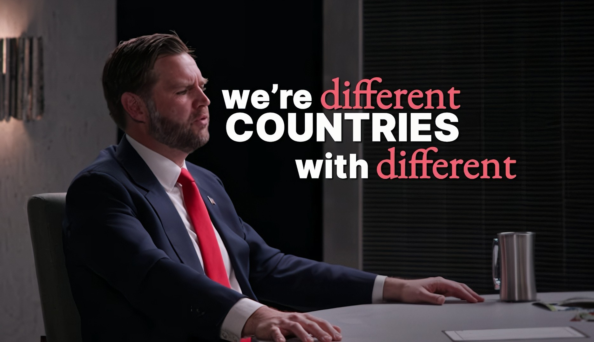

E-Portfolio | H.A.Ravindu Lankeshwara | UWU/ICT/24/021
EXCLUSIVE Vice President JD Vance: The Ominous Truth About Our Allies, Israel Has The Best Spies
Overview of the Interview
This episode features an in-depth, exclusive conversation focusing on personal history, political shifts, and the complexities of governing the United States. The format prioritizes raw, personal storytelling and deep dives into the psychological landscapes of the guests.
Core Topics Discussed
1. Formative Years
Exploration of JD Vance's challenging childhood, the influence of his grandmother, and the impact of family trauma and addiction.
2. Political Evolution
Insight into his transition from a vocal critic of Donald Trump to serving as his Vice President choice.
3. Foreign Policy
Covers recent foreign policy initiatives, specifically strategic peace discussions and the dynamics of the U.S.-Israel relationship.
4. Faith, Purpose & Tech
His journey to Christianity explored in his new book 'Communion', balanced alongside dialogues regarding the societal implications of AI on the workforce.
Visual Insight: Contextual Core Themes Data

Personal Perspective
Reflective Growth
Throughout the interview, Vice President JD Vance engages in a deep reflection on his personal and professional evolution, emphasizing that growth often stems from acknowledging one's past mistakes and remaining open to change.
- Acknowledging Error Vance discusses the importance of being able to admit when one is wrong, specifically regarding his initial public criticisms of Donald Trump in 2016. He reflects that his earlier assumptions about Trump and the functionality of American institutions were proven incorrect, which catalyzed a shift in his perspective.
- The Role of Childhood Trauma He reflects on how his upbringing marked by his mother's opioid addiction and instability-shaped his adult personality. He highlights the necessity of having a stable anchor in childhood, such as his grandmother, and acknowledges that his current path is a departure from the chaos he experienced early on.
- Spiritual Transformation Vance describes his transition from an angry atheist to a baptized Christian. He explains this not as an overnight epiphany, but as an intellectual and emotional journey where he realized that the values and stability he admired in others were often rooted in faith, leading him to reassess his own worldview.
- The Importance of Gratitude Reflecting on the influence of his grandmother, he identifies gratitude as a defining trait of good people who overcome struggle. He notes that while he has risen to the office of the Vice Presidency, he maintains a conscious effort to stay grounded and not let the status or pomp of his position alter his character.